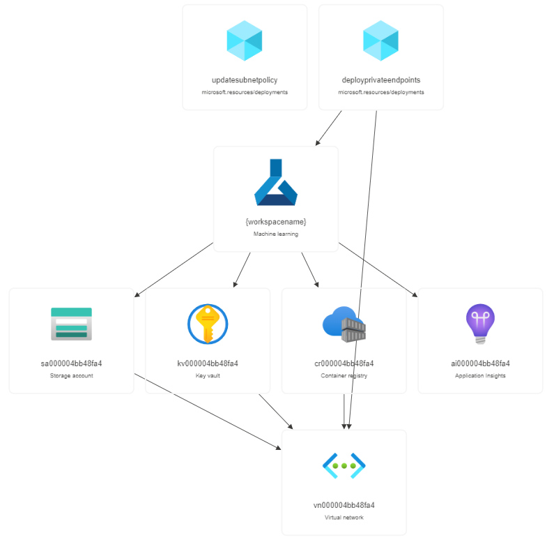

This template is an advanced Azure Machine Learning workspace creation templates which support:
The following commands show the advanced scenarios for workspace creation.
This command creates a workspace with private endpoint.
# For deployment with existing resources, use "existing" for the option and resource group name is required.
# Create a workspace with existing storage account, key vault and appinsights
New-AzResourceGroupDeployment -ResourceGroupName "rg" -TemplateFile ".\azuredeploy.json" -workspaceName "workspaceName" -location "westus2" -Name "deploymentname" -storageAccountOption "existing" -storageAccountResourceGroupName "existing-storage-rg" -storageAccountName "existing-storage-name" -keyVaultOption "existing" -keyVaultResourceGroupName "existing-kv-rg" -keyVaultName "existing-kv-name" -applicationInsightsOption "existing" -applicationInsightsResourceGroupName "existing-ai-rg" -applicationInsightsName "existing-ai-name" -identityType "systemAssigned"
This command creates a workspace with private endpoint.
# The deployment is only valid in regions which support private endpoints. For manual approval private endpoint, just set privateEndpointType="ManualApproval"
# Create a workspace with private endpoint
New-AzResourceGroupDeployment -ResourceGroupName "rg" -TemplateFile ".\azuredeploy.json" -workspaceName "workspaceName" -location "westus2" -Name "deploymentname" -privateEndpointType "AutoApproval"
# Create a workspace with private endpoint with user specified virtual network name
New-AzResourceGroupDeployment -ResourceGroupName "rg" -TemplateFile ".\azuredeploy.json" -workspaceName "workspaceName" -location "westus2" -Name "deploymentname" -privateEndpointType "AutoApproval" -vnetName "vnet" -subnetName "subnet"
# Create a workspace with private endpoint with user specified existing vnet
New-AzResourceGroupDeployment -ResourceGroupName "rg" -TemplateFile ".\azuredeploy.json" -workspaceName "workspaceName" -location "westus2" -Name "deploymentname" -privateEndpointType "AutoApproval" -vnetName "vnet" -vnetOption "existing" -vnetResourceGroupName "rg" -subnetName "subnet" -subnetOption "existing"
This command is an example of creating workspace with resource behind vnet.
# Parameter 'vnetOption' is required for this scenario and should not be 'none'. The example shows how to put the storage account behind vnet. You can also apply the scenario into key vault and container registry. For container registry, only 'Premium' sku is supported.
# Create a workspace with storage account behind a new vnet.
New-AzResourceGroupDeployment -ResourceGroupName "rg" -TemplateFile ".\azuredeploy.json" -workspaceName "workspaceName" -location "westus2" -Name "deploymentname" -storageAccountBehindVNet "true" -vnetOption "new" -vnetName "vnet"
# Create a workspace with storage account behind an existing vnet and an existing subnet.
# Prerequisite: Subnet should have Microsoft.Storage service endpoint
# Enable service endpoint
Get-AzVirtualNetwork -ResourceGroupName "rg" -Name "vnet" | Set-AzVirtualNetworkSubnetConfig -Name "subnet" -AddressPrefix "<subnet prefix>" -ServiceEndpoint "Microsoft.Storage" | Set-AzVirtualNetwork
# Deployment
New-AzResourceGroupDeployment -ResourceGroupName "rg" -TemplateFile ".\azuredeploy.json" -workspaceName "workspaceName" -location "westus2" -Name "deploymentname" -storageAccountBehindVNet "true" -vnetOption "existing" -vnetName "vnet" -vnetResourceGroupName "rg" -subnetName "subnet" -subnetOption "existing"
# Create a workspace with all dependent resources behind a new vnet
New-AzResourceGroupDeployment -ResourceGroupName "rg" -TemplateFile ".\azuredeploy.json" -workspaceName "workspaceName" -location "westus2" -Name "deploymentname" -containerRegistryOption "new" -containerRegistrySku "Premium" -storageAccountBehindVNet "true" -keyVaultBehindVNet "true" -containerRegistryBehindVNet "true" -vnetOption "new" -vnetName "vnet"
# Create a workspace with all dependent resources behind an existing vnet
# Service endpoints
Get-AzVirtualNetwork -ResourceGroupName "rg" -Name "vnet" | Set-AzVirtualNetworkSubnetConfig -Name "subnet" -AddressPrefix "<subnet prefix>" -ServiceEndpoint "Microsoft.Storage" | Set-AzVirtualNetwork
Get-AzVirtualNetwork -ResourceGroupName "rg" -Name "vnet" | Set-AzVirtualNetworkSubnetConfig -Name "subnet" -AddressPrefix "<subnet prefix>" -ServiceEndpoint "Microsoft.KeyVault" | Set-AzVirtualNetwork
Get-AzVirtualNetwork -ResourceGroupName "rg" -Name "vnet" | Set-AzVirtualNetworkSubnetConfig -Name "subnet" -AddressPrefix "<subnet prefix>" -ServiceEndpoint "Microsoft.ContainerRegistry" | Set-AzVirtualNetwork
# Deployment
New-AzResourceGroupDeployment -ResourceGroupName "rg" -TemplateFile ".\azuredeploy.json" -workspaceName "workspaceName" -location "westus2" -Name "deploymentname" -containerRegistryOption "new" -containerRegistrySku "Premium" -storageAccountBehindVNet "true" -keyVaultBehindVNet "true" -containerRegistryBehindVNet "true" -vnetOption "existing" -vnetName "vnet" -vnetResourceGroupName "rg" -subnetName "subnet" -subnetOption "existing"
This command is an example of creating workspace with user assigned identity.
New-AzResourceGroupDeployment -ResourceGroupName "rg" -TemplateFile ".\azuredeploy.json" -workspaceName "workspaceName" -location "westus2" -Name "deploymentname" -storageAccountOption "existing" -storageAccountResourceGroupName "existing-storage-rg" -storageAccountName "existing-storage-name" -keyVaultOption "existing" -keyVaultResourceGroupName "existing-kv-rg" -keyVaultName "existing-kv-name" -applicationInsightsOption "existing" -applicationInsightsResourceGroupName "existing-ai-rg" -applicationInsightsName "existing-ai-name" -identityType "userAssigned" -primaryUserAssignedIdentity "/subscriptions/00000000-0000-0000-0000-000000000000/resourceGroups/rg/providers/Microsoft.ManagedIdentity/userAssignedIdentities/uai"
If you are new to Azure Machine Learning, see:
If you are new to template development, see: